TriCore Development Platform - Release Notes Helios SR2 (1.2.0)
Parallel Builds
The support for parallel build on Windows platforms has been enabled (make -j <job numbers>). In the number of parallel jobs can be set in the project properties C/C++ Build -> Behaviour.
Global Options
Since this release you can define so-called global options which are passed to all tools of the toolchain. The options can be defined in the category "global options" in the settings dialog of the project properties.
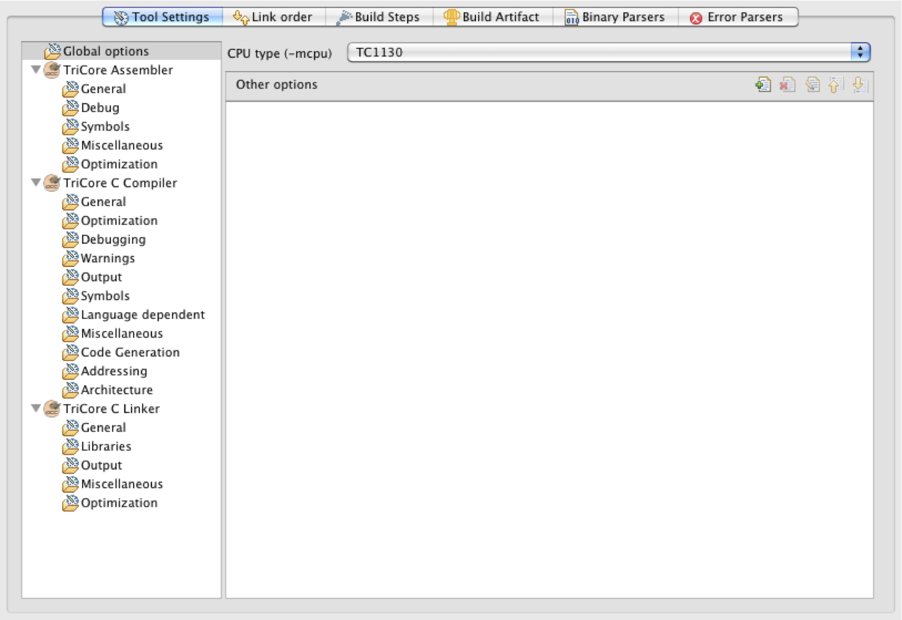
Licensing Wizard
The HighTec tools have an integrated license manager to support different license models. The status of installed and active licenses can be reviewed in the license-manager in the Eclipse Preference Store. The dialog can be opened via the menu Window->Preferences->HighTec Preferences->Licensing.
- An overview of installed licenses is displayed.
- New licenses can be created via internet activation by using an activation key..
- An provided licensing file can be added to the toolchain
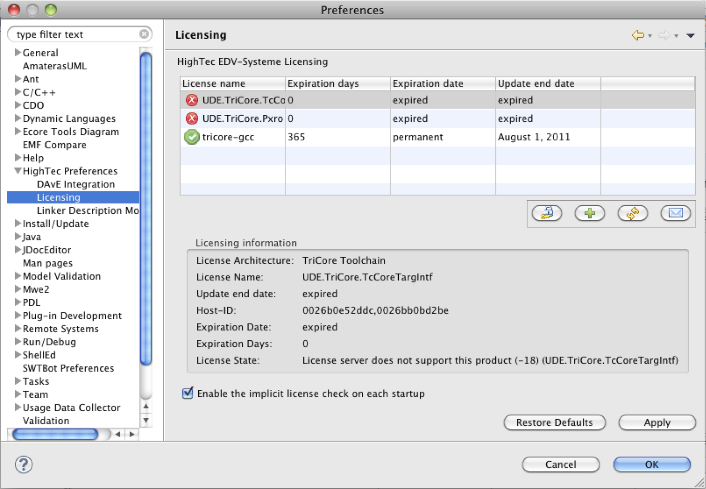
Example Wizard
The examples are now categorized in architecture and boards. The new hierarchical view improves the readability.
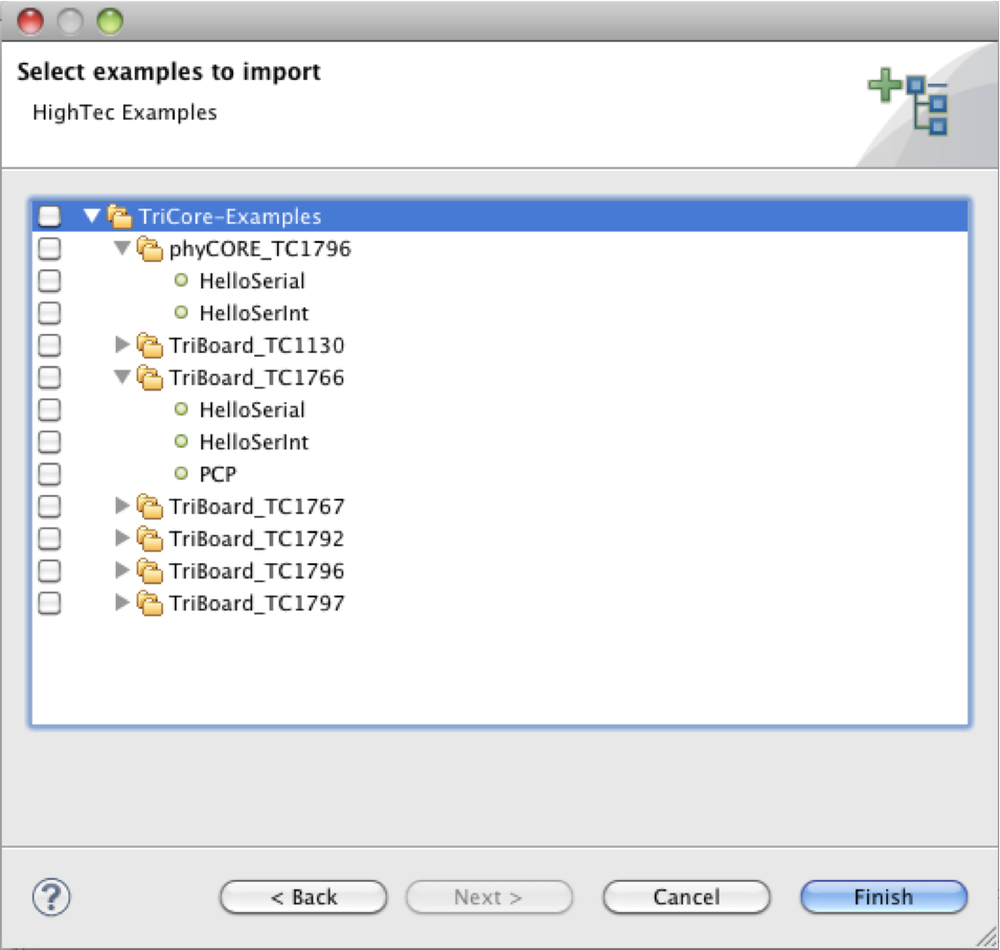
LDF Model Editor
The LDF-Editor has been rewritten. We improved:
- design,
- usability,
- functionality.
The attributes of a model entry can be accessed over the editor. The layout of the attributes in the editor can be changed. There are two modes:
- horizontal: the attributes are shown on the right of the model
- vertical: the attributes are shown on the bottom of the model
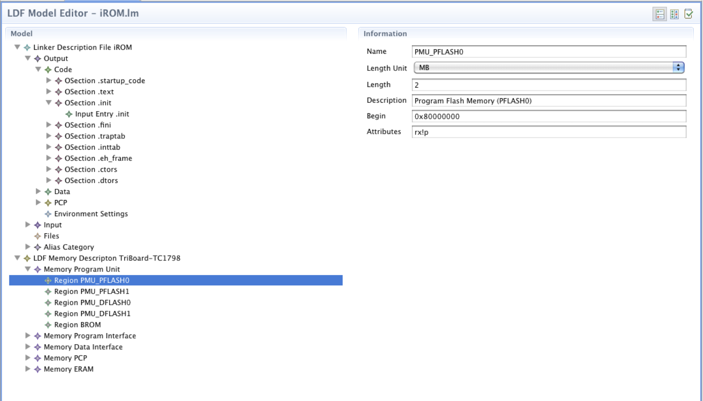
The Model-Editor pop-ups with mouse-over functionality an summary of model-items e.g. the layout configuration of a board. The displayed columns can be sorted by clicking the column heading.
Features of the summary view:
- The view is a clearly structured table, in which the keyfacts of the elements are displayed.
- The view supports a sorting for all columns
- You can access modell-items directly through this table. A double-click opens the model-item in the editor.
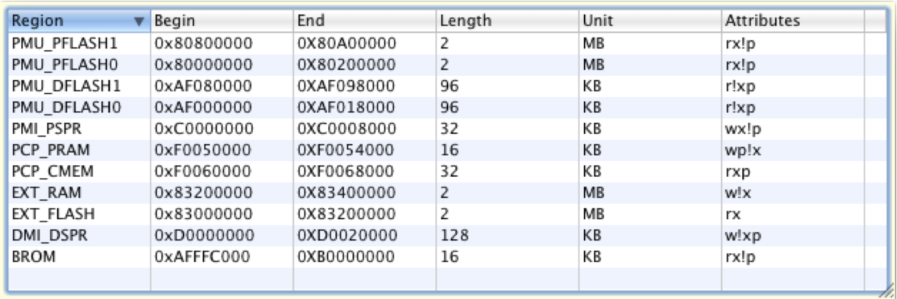
Another useful feature is the validation of the model after each save. If you make error-nous modification in a model, then the editor will display an error while saving the model. "Problems-View" indicates the errors, which are linked to the corresponding model entries. A double-click on such an item will jump the linked entry.
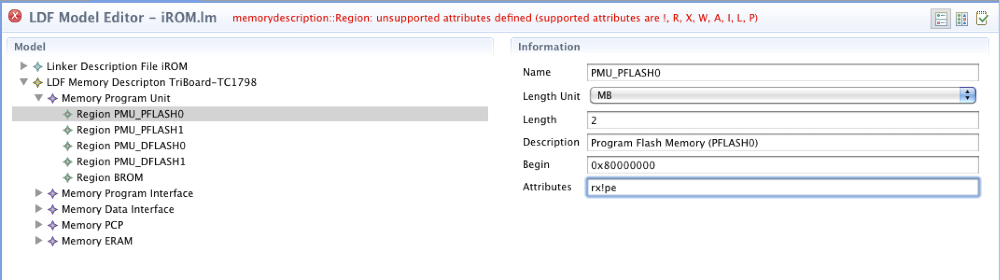
Non Managed Makefile Support
The project wizard is extended by a "Non Managed Makefile Project". When creating a project, all board-specific headers, sources and models will be copied into the project, but you have to create your own makefile or add an existing one. Please create a makefile in the root of your project and create at least the makefile targets "clean-target" and "all-target".
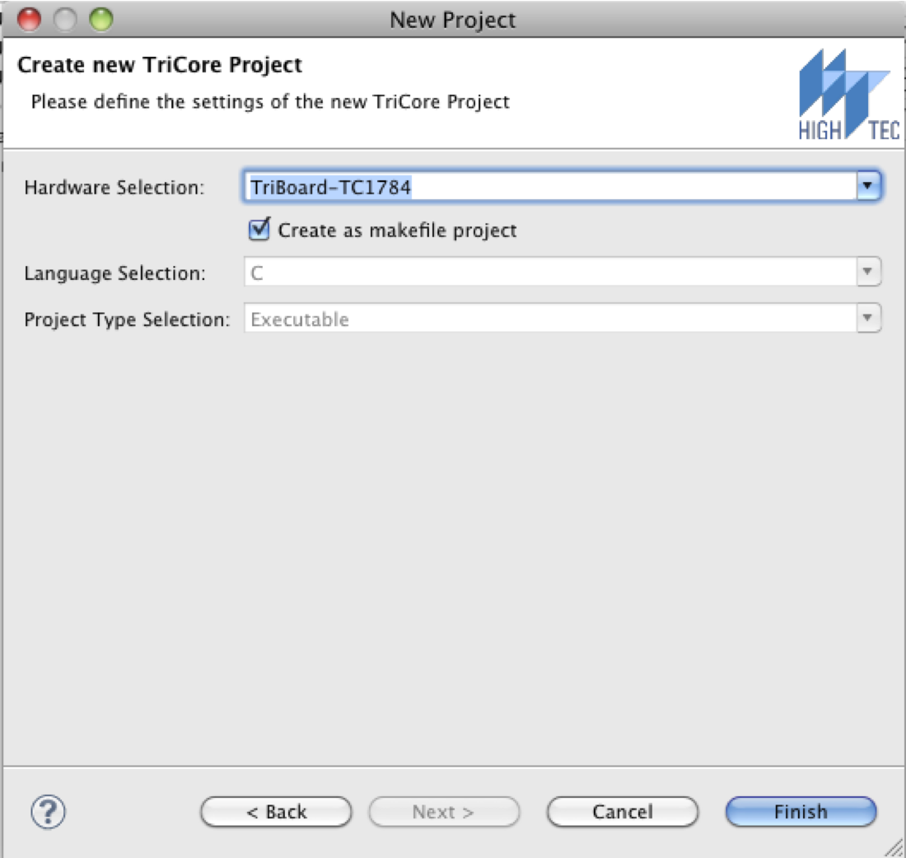
Link Order Tab
The option which defines the link-order, was refactored. The option was moved to an own property tab in the project settings.
You can define in this tab:
- The link order of the object-files
- The include/exclude build-state of the corresponding source-files
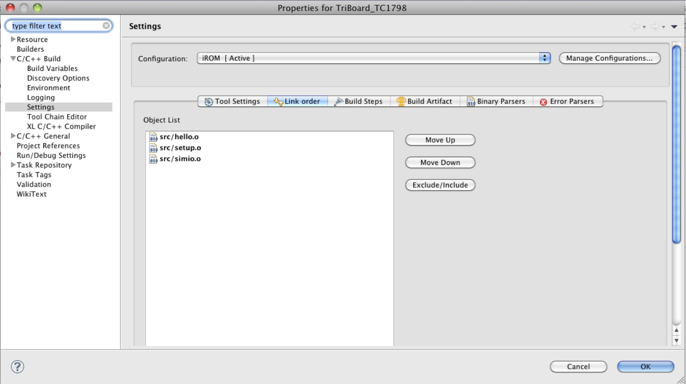
DAvE Integration
We have extended the DAvE integration with a DAvE-Launcher button in Eclipse. This enables you to import an existing DAvE-Project and to pass the imported DAvE project for editing to the the DAvE-Application.
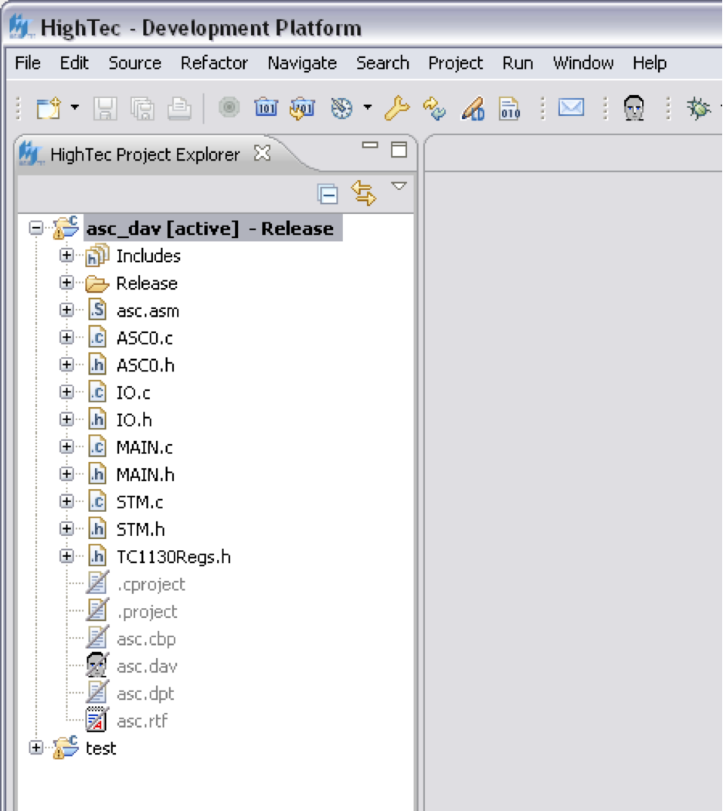
Project-Converter
Some of the new integrated features use an extended project format, there "existing" projects need to be converted to the new project format. If you try to build a former project this may result in build errors. If you go to the Problem View console you can use the context menu "Quick Fixes" to migrate to the new project format.
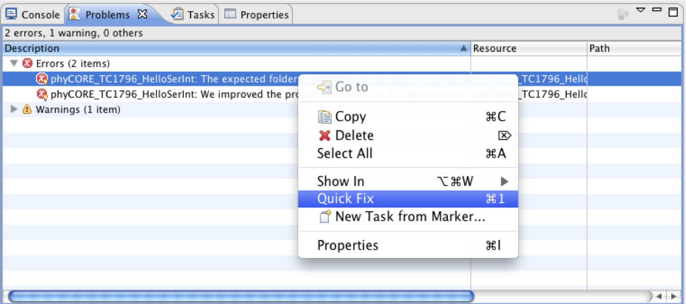
Systemvalidation
Different versions of a toolchain can be installed in different installation directories. The installer of the toolchain set the environment variable TRICORE_TOOLS. This variable is referenced by Eclipse and used within the Toolchain configuration. The configuration will be check on start-up and returns an error in case that the environment variable TRICORE_TOOLS does not exist or points to a wrong directory.
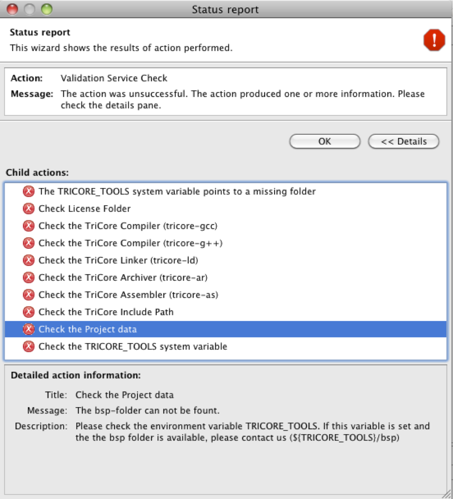
|